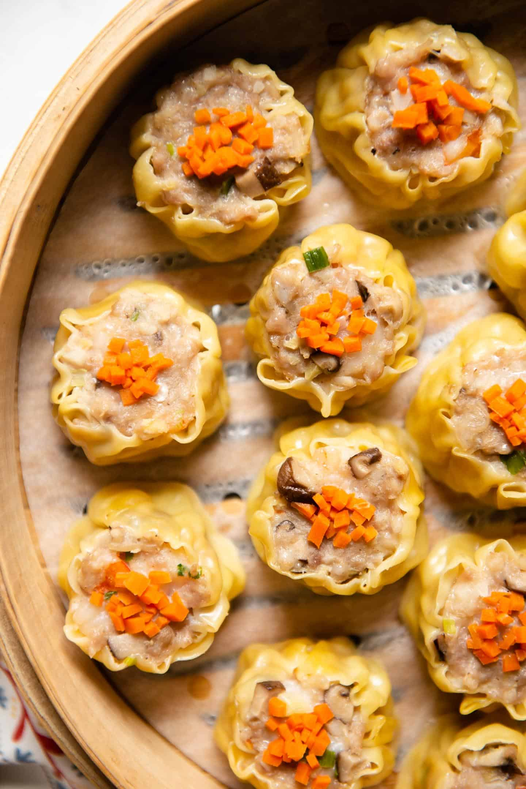

Best Shu-Mai

Everyone loves dim sum but to make it at home sound like way to much work. But dont worry with this recipe you will have the confidence and skill to mkae dim sum at home just like they do at the restraunts.
My family loves to head out and go eat dim sum but home made just means so much more. Now lets get ready to make the best breakfest you've ever had!
INGRIDIENTS
- 3 dried shiitake mushrooms
- 350g/ 13oz pork mince (ground pork)
- 3/4 tsp salt
- 3/4 tsp salt
- 1 tsp light soy sauce
- 1.5 tbsp Chinese cooking wine
- 150g/5oz prawns/shrimp
- 2 tbsp white part of green onions
- 20 - 25 wonton wrappers / egg wrappers
Directions
- Place pork, salt, soy sauce, rice wine, sugar with the pork meat/mince in a large mixing bowl. Mix vigorously with a spoon or use your hands until it becomes pasty (initially it will be crumbly) - about 30 seconds.
- Add mushrooms, prawns and green onions, mix until just dispersed (don't crush the prawn meat).
- Form an "O" with your forefinger and thumb.
- Place a wonton wrapper over the "O". Push in 1 heaped teaspoon of Filling and push down into the "O" hole.
- Use a butter knife to smear more Filling into until level with edge of wonton.
- Place on work surface and push down to flatten base and use fingers to shape into a round.
- Line a 30cm/12" bamboo steamer (or stove steamer) with baking paper with holes in it.
- Place Siu Mai in steamer (20 - 25 fits). Place lid on, place on wok over simmering water.
- Remove steamer from wok. Remove lid and place a tiny bit of roe in the middle of each dumpling.